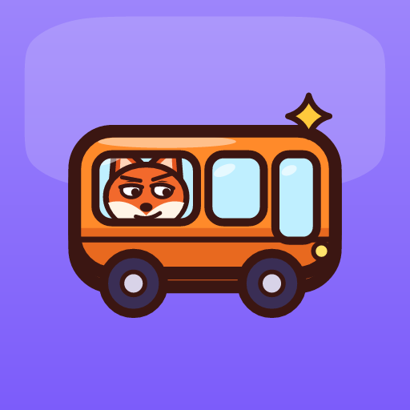

Critter Bus: Jam Puzzle
A bus jam puzzle with a park full of critters: board each one on the bus of its color.
Factsheet
- Developer
- MaxFabrics, independent studio based in France
- Release date
- October 25, 2026
- Platform
- Android (Google Play)
- Price
- Free to play, with ads
- Languages
- English, French, German, Spanish, Portuguese, Italian
- Genre
- Puzzle, bus jam, turn-based
- Google Play
- com.maxfabrics.critterbus
- Press contact
- Maxence Bonnet, founder: contact@maxfabrics.com
- Review copy
- APK or Google Play test access on request
Description
The park is packed with six species: foxes, frogs, penguins, chicks, pigs and raccoons. A three-seat bus waits at the stop in the color of one species, and you can see the next two coming. Tap a critter with a clear way out: it runs to the stop and boards if there is a seat left for it. Wrong ride? It waits on the bench, which only has five seats.
As soon as a bus is full, it drives off and the next one picks up everyone waiting for it, so departures chain together. Clear the park to win; if the bench overflows, the round is lost. There is no timer: every level is about planning the order of your moves.
Features
- Six species that stay readable without color: each one has its own silhouette and its own bus.
- Bushes that block the way, sleeping critters that wake up when a neighbor leaves, mystery baskets.
- Ten handmade levels, then generated levels with no end, with Hard and Very hard levels announced in advance.
- Coins earned while playing unlock color themes for the scenery, and a coin gift for each day you play.
- Adjustable sound, vibration and visual effects; the game follows the Android "Remove animations" setting.
Trailer
Download the trailer (MP4, 1080 × 1920, 33 s, no sound)
Screenshots


Clips
Short vertical clips of real gameplay, ready for social posts.
Logos and artwork
- Game icon (PNG, 512 × 512)
- Feature graphic (PNG, 1024 × 500)
- MaxFabrics logo (SVG) and PNG (1600 px wide)


About MaxFabrics
MaxFabrics is a one-person independent studio from France that makes small mobile games for Android: quick to pick up, colorful, and pleasant to replay. Critter Bus is one of its first three games, with Boom Crates and Mahjong Sundae.
For interviews, review copies or more material, write to contact@maxfabrics.com.